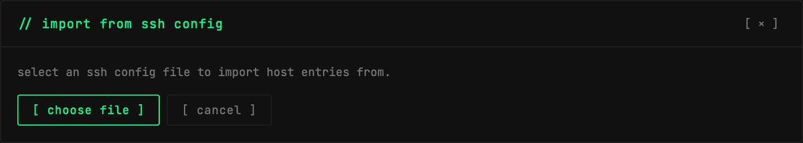
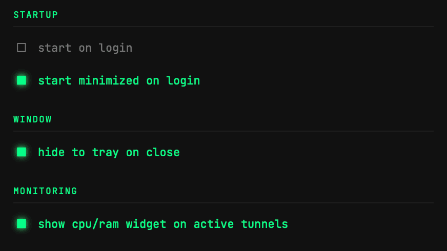
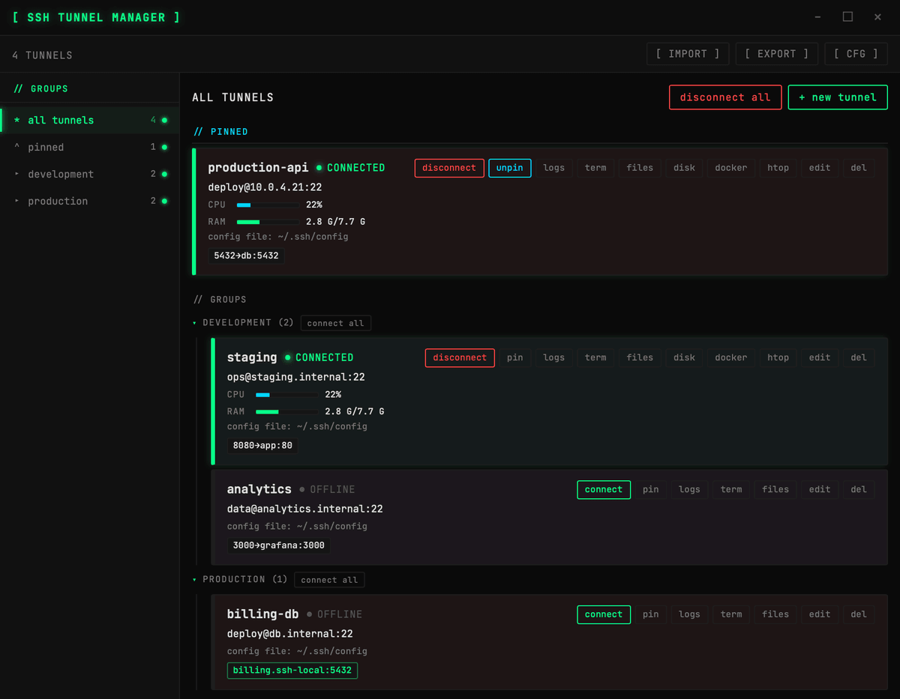
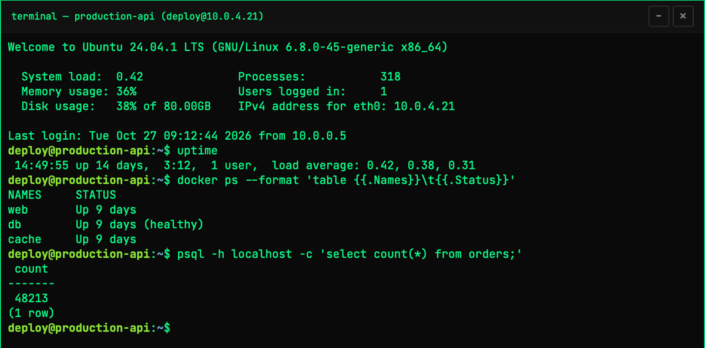
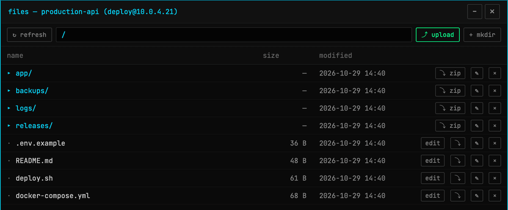
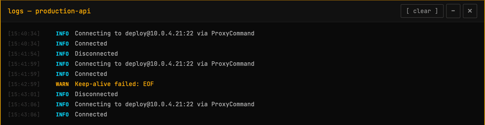
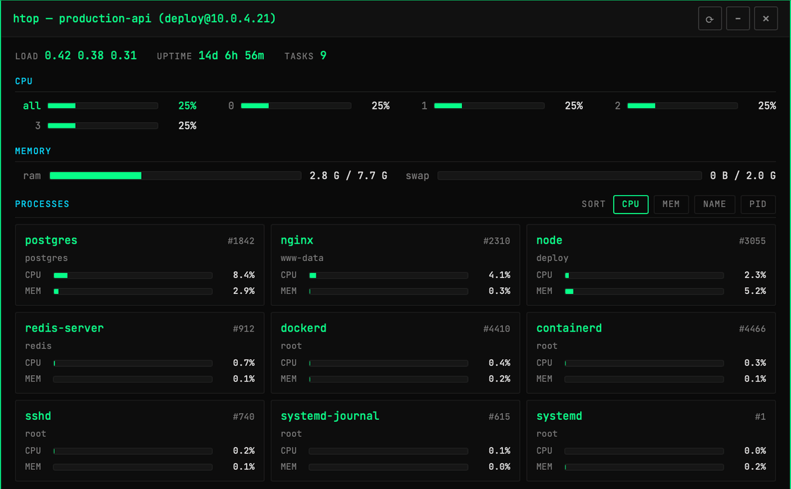
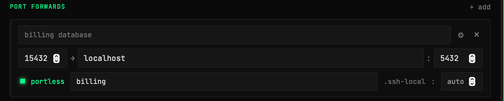
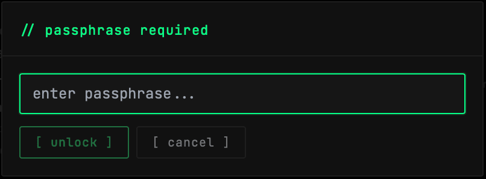
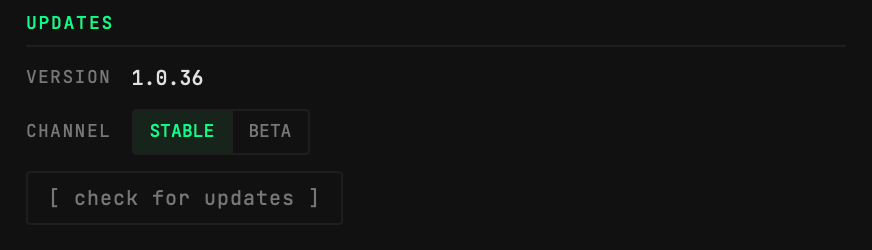

// FUNKCJE
Funkcje SSH Tunnel Managera
Przekierowania portów SSH, konfiguracja hostów, terminal, pliki i statystyki serwera w jednej aplikacji. Dotyczy wersji 1.0.36. Na razie obsługiwane są tylko lokalne przekierowania portów (bez SOCKS i bez przekierowań zdalnych).
Konfiguracja w ~/.ssh/config
Tunele są zapisywane jako standardowe bloki Host, a metadane aplikacji trafiają do komentarzy, więc ssh i git widzą te same wpisy. Hosty, które już są w ~/.ssh/config, wczytują się przy pierwszym uruchomieniu, a import i eksport do dowolnego pliku konfiguracji SSH są wbudowane.
# stm:group=production
# stm:color=#e5534b
# stm:pinned=true
Host production-api
HostName 10.0.4.21
User deploy
IdentityFile ~/.ssh/id_ed25519
ProxyJump deploy@bastion.example.com
LocalForward 5432 db:5432 # primary database
# stm:group=development
Host staging
HostName staging.internal
User ops
LocalForward 8080 app:80
Wiele portów, jeden tunel
Jeden tunel może mapować dowolnie wiele lokalnych portów na zdalne hosty. Adres 127.0.0.1:port skopiujesz jednym kliknięciem z karty tunelu albo z menu w zasobniku.

Połączenia przez bastion
Do hostów za bastionem dotrzesz przez ProxyJump albo ProxyCommand, ustawiane osobno dla każdego tunelu w sekcji advanced (proxy) formularza.

Dostęp z zasobnika systemowego
Łączysz, rozłączasz i kopiujesz porty bez otwierania okna. Ikona w zasobniku pokazuje stan ogólny: szara, gdy wszystko jest rozłączone, zielona, gdy działa tunel, i czerwona przy błędzie.

Automatyczne ponowne łączenie
Tunele łączą się ponownie po zerwaniu sieci. Tunel możesz oznaczyć do łączenia przy starcie, aplikację uruchamiać po zalogowaniu (domyślnie zminimalizowaną do zasobnika) i zostawiać w zasobniku po zamknięciu okna.

Grupy i przypięte tunele
Tunele możesz łączyć w grupy i łączyć lub rozłączać całą grupę naraz. Najczęściej używane tunele przypniesz na górze listy.

Użycie CPU, RAM i dysku
Połączone hosty pokazują na karcie tunelu bieżące użycie CPU i RAM; włączysz to w Ustawieniach → Monitoring. Przycisk disk pokazuje zamontowane systemy plików i ich zapełnienie.


Kontenery Docker na serwerze
Gdy na połączonym hoście jest Docker, przycisk docker pokazuje jego kontenery ze statusem, obrazem i opublikowanymi portami. Możesz je sortować po nazwie, CPU lub RAM.

Terminal i pliki serwera
Z karty tunelu otworzysz interaktywną powłokę na hoście. Przycisk files przegląda host przez SFTP: katalogi z rozmiarami i datami, wysyłanie, nowe katalogi, pobieranie katalogu jako ZIP, edycja plików tekstowych na miejscu, zmiana nazw i usuwanie.


Logi i procesy
Każdy tunel prowadzi log połączeń, rozłączeń, ponownych połączeń i ostrzeżeń, który możesz wyczyścić. Gdy na hoście jest htop, przycisk htop otwiera własny monitor procesów aplikacji: obciążenie, czas działania, CPU na rdzeń, pamięć i listę procesów sortowaną po CPU, pamięci, nazwie lub PID.


Portless: dostęp po nazwie
Zaznacz portless przy przekierowaniu i wpisz nazwę; aplikacja dopisze .ssh-local, więc usługa będzie dostępna pod nazwa.ssh-local zamiast 127.0.0.1:port. Na macOS 13+ raz zatwierdzasz podpisaną usługę systemową aplikacji; na Linuxie porty poniżej 1024 wymagają uprawnienia CAP_NET_BIND_SERVICE; Windows nie wymaga dodatkowych kroków.

Metody uwierzytelniania
Pliki kluczy (RSA, ECDSA, Ed25519) z hasłem przechowywanym w systemowym pęku kluczy, działający ssh-agent albo domyślne klucze w ~/.ssh. IdentityAgent z ~/.ssh/config nie jest jeszcze odczytywany.

Aktualizacje z GitHub Releases
Aplikacja sprawdza GitHub Releases przy starcie i informuje o nowszej wersji. Zainstalujesz ją z Ustawień lub z menu w zasobniku, na kanale Stable albo Beta, który dostaje też wydania przedpremierowe.
